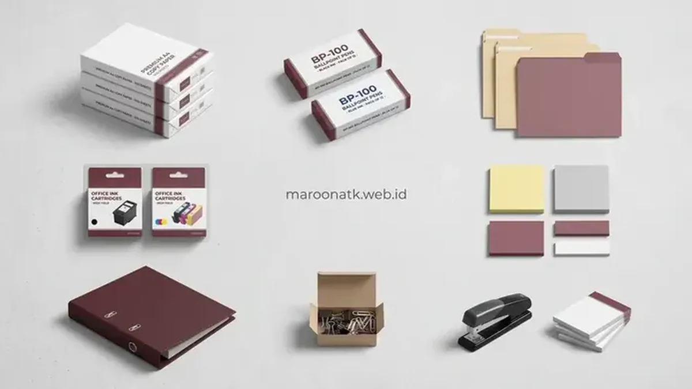

Paket pengadaan alat tulis kantor berdasarkan jumlah staf adalah skema pembelian ATK yang jumlah dan jenis itemnya disesuaikan dengan rasio kebutuhan setiap karyawan, sehingga alokasi barang lebih tepat dibanding pembelian acak yang sering menyebabkan kelebihan pulpen atau kekurangan kertas. Pendekatan berbasis rasio headcount ini mampu memangkas pemborosan anggaran ATK hingga 25–35% per bulan.
Apa Itu Paket Pengadaan Alat Tulis Kantor Berdasarkan Jumlah Staf?
Paket pengadaan alat tulis kantor berdasarkan jumlah staf adalah skema pembelian ATK yang jumlah dan jenis itemnya disesuaikan dengan rasio kebutuhan setiap karyawan, bukan dibeli secara acak berdasarkan perkiraan kasar.
Pendekatan ini membantu perusahaan memastikan setiap divisi mendapatkan jumlah ATK yang proporsional sesuai jumlah karyawan dan intensitas pekerjaan administratif masing-masing, sehingga alokasi anggaran menjadi lebih terkendali. Dalam praktiknya, divisi General Affairs (GA) mengelompokkan kebutuhan ke dalam kategori habis pakai perorangan (seperti pulpen gel, pensil, sticky note) dan kategori pemakaian bersama (seperti kertas HVS, binder clip, toner printer, ordner arsip).
Dengan membagi item pengadaan berdasarkan rasio per staf, bagian purchasing dapat menyusun kontrak bundling pengadaan langsung ke katalog alat tulis kantor dengan harga grosir yang jauh lebih ekonomis dibanding transaksi eceran.
Mengapa Alokasi ATK yang Acak Menyebabkan Kelebihan atau Kekurangan Barang?
Alokasi ATK yang acak tidak mempertimbangkan pola pemakaian aktual per staf atau divisi, sehingga sebagian barang seperti pulpen menumpuk di satu divisi sementara barang lain seperti kertas justru cepat habis di divisi lain tanpa terpantau.
Ketidakseimbangan ini sering terjadi karena pembelian dilakukan berdasarkan permintaan mendadak dari masing-masing divisi tanpa koordinasi terpusat, sehingga sulit memprediksi kebutuhan riil perusahaan secara keseluruhan. Akibatnya timbul berbagai masalah operasional:
- Dead stock di laci meja: Pulpen, klip kertas, dan stabilo sering dipesan berulang kali padahal staf masih menyimpan stok lama di laci kerja mereka.
- Stockout kertas & toner: Divisi yang memiliki beban cetak laporan tinggi sering kehabisan kertas HVS di tengah proses tender atau penutupan buku akhir bulan.
- Pembelian darurat berharga mahal: Ketika stok habis mendadak, staf terpaksa membeli ATK di toko retail terdekat dengan harga 30–50% lebih mahal tanpa faktur pajak resmi.

Formula Excel Menghitung Kebutuhan ATK Kantor Akurat
Pelajari rumus perhitungan safety stock dan template inventory control ATK bulanan.
Bagaimana Cara Menghitung Alokasi ATK Sesuai Jumlah Staf?
Alokasi ATK sesuai jumlah staf dihitung dengan menentukan rasio kebutuhan dasar per karyawan untuk setiap kategori ATK, kemudian menyesuaikannya dengan karakteristik masing-masing divisi.
1. Menentukan Rasio Kebutuhan per Staf
Tentukan rasio dasar seperti jumlah pulpen atau buku catatan per staf per bulan, berdasarkan data historis pemakaian ATK pada periode-periode sebelumnya sebagai acuan awal perhitungan. Rata-rata seorang karyawan kantor membutuhkan 2–3 pulpen per bulan, 1 buku catatan per kuartal, serta 1 pack sticky notes per 2 bulan.
2. Menyesuaikan dengan Divisi dan Intensitas Kerja
Setelah rasio dasar ditentukan, sesuaikan kembali dengan karakteristik divisi, karena divisi administrasi yang banyak mencetak dokumen tentu membutuhkan alokasi kertas dan tinta lebih besar dibanding divisi lapangan.
| Kategori Divisi | Karakteristik Pekerjaan | Rasio Kertas HVS (per Staf/Bulan) | Fokus SKU Tambahan |
|---|---|---|---|
| Finance & Akuntansi | Audit bukti transaksi, invoice, dan laporan pajak | 1,5 – 2 Rim HVS 75gsm | Map ordner arsip, kalkulator 12 digit, stapler HD-50 |
| Legal & HRD | Perjanjian kerja, dokumen perizinan, dan arsip pegawai | 1,5 – 2 Rim HVS 80gsm | Map snelhecter, materai, binder clip, gunting/cutter |
| Marketing & Sales | Proposal klien, meeting eksternal, dan presentasi | 0,5 – 1 Rim HVS 80gsm | Clear holder, pulpen premium, laser pointer, flipchart |
| IT & Operasional | Paperless digital, maintenance server dan sistem kerja | 0,25 – 0,5 Rim HVS 75gsm | Label kabel marker, baterai mouse, sticky note Kanban |

Apa Manfaat Menggunakan Paket Pengadaan Dibanding Pembelian Acak?
Paket pengadaan membantu menstabilkan anggaran bulanan karena volume dan jenis barang sudah diperhitungkan sejak awal, berbeda dengan pembelian acak yang sulit diprediksi setiap bulannya.
Selain itu, sistem paket juga menyederhanakan proses pemesanan karena perusahaan tidak perlu melakukan transaksi berulang kali dalam sebulan, sehingga mengurangi beban administrasi bagi tim purchasing. Manfaat nyata yang dirasakan mencakup:
- Diskon grosir korporat: Membeli paket bundling bulanan memberikan harga satuan SKU 15–25% lebih murah dibanding harga eceran.
- Tertib administrasi & satu faktur pajak: Pengadaan dalam skema paket memudahkan pencocokan Purchase Order (PO), Surat Jalan, Berita Acara Serah Terima (BAST), dan e-Faktur pajak konsolidasian.
- Buffer stock aman: Supplier dapat menyiapkan stok cadangan di gudangnya sehingga tidak ada risiko keterlambatan suplai barang.
Bagaimana Menyesuaikan Paket Saat Jumlah Staf Berubah?
Ketika jumlah staf bertambah atau berkurang, segera perbarui rasio kebutuhan berdasarkan data terbaru dan komunikasikan perubahan tersebut kepada supplier agar volume paket bulan berikutnya dapat disesuaikan dengan tepat.
Evaluasi perubahan staf sebaiknya dilakukan secara berkala pada pekan ketiga setiap bulan menjelang penerbitan PO rutin. Jika terjadi rekrutmen karyawan baru dalam jumlah besar (onboarding batch), buatkan formulir starter kit khusus staf baru yang mencakup meja kerja, pulpen, buku catatan, ID holder, dan ordner dokumen personal.
Maroon ATK berpengalaman menyuplai kebutuhan ATK ke lebih dari 150 instansi pemerintah dan perusahaan swasta di Jabodetabek dengan keakuratan pengiriman barang mencapai 99,8 persen (data internal Maroon ATK, 2026), sehingga penyesuaian volume paket dapat dilakukan secara fleksibel mengikuti dinamika jumlah staf perusahaan Anda.
Implementasi Paket ATK di Berbagai Wilayah Operasional Kantor
Bagi instansi yang memiliki cabang di beberapa kota besar, penerapan paket pengadaan ATK berbasis jumlah staf perlu mempertimbangkan kondisi logistik masing-masing wilayah:
- Jakarta: Fokus pada kepatuhan aturan loading dock gedung bertingkat dan kecepatan pengiriman lead time 24 jam dengan armada logistik terpadu.
- Surabaya: Pemanfaatan buffer stock di pusat pergudangan regional untuk melayani divisi manufaktur dan perbankan Jawa Timur.
- Malang: Penyesuaian fluktuasi pesanan mengikuti kalender akademik kampus dan institusi pendidikan tinggi.
- Denpasar: Penerapan fixed price agreement untuk mengunci harga satuan dari fluktuasi ongkos ekspedisi laut antarpulau.
- Makassar: Fleksibilitas termin pembayaran tempo (TOP 30 hari) guna menjaga kelancaran arus kas korporat di wilayah Indonesia Timur.
Pelajari juga rincian paket pengadaan kantor lengkap yang kami sediakan, mulai dari paket bundling meja-kursi hingga ATK operasional bulanan. Untuk informasi legalitas dan layanan menyeluruh, kunjungi halaman tentang kami.
Kesimpulan
- Hitung rasio kebutuhan: Tetapkan rasio kebutuhan ATK per staf sebagai dasar penyusunan paket pengadaan bulanan yang terukur.
- Sesuaikan per divisi: Sesuaikan alokasi kertas dan tinta dengan karakteristik dan intensitas kerja masing-masing divisi kantor.
- Gunakan sistem paket: Terapkan sistem paket pengadaan untuk menstabilkan anggaran belanja (OpEx) dan menyederhanakan pemesanan.
- Perbarui volume dinamis: Perbarui volume paket setiap kali terjadi perubahan jumlah staf secara signifikan sebelum PO diterbitkan.
- Konsultasi gratis: Konsultasikan penyusunan paket pengadaan ATK sesuai jumlah staf Anda bersama tim ahli MAROON ATK.
Pertanyaan yang Sering Diajukan (FAQ)
Paket pengadaan alat tulis kantor berdasarkan jumlah staf adalah skema pembelian ATK yang jumlah dan jenis itemnya disesuaikan dengan rasio kebutuhan setiap karyawan, bukan dibeli secara acak tanpa perhitungan.
Alokasi acak tidak mempertimbangkan pola pemakaian aktual per staf atau divisi, sehingga sebagian barang menumpuk sementara barang lain justru cepat habis tanpa terpantau.
Hitung dengan menentukan rasio kebutuhan dasar per staf untuk setiap kategori ATK, kemudian sesuaikan dengan karakteristik divisi yang memiliki intensitas kerja administratif berbeda-beda.
Paket pengadaan membantu menstabilkan anggaran bulanan, menyederhanakan proses pemesanan, dan mengurangi risiko kelebihan atau kekurangan stok ATK.
Perbarui rasio kebutuhan berdasarkan jumlah staf terbaru dan komunikasikan perubahan tersebut kepada supplier agar volume paket bulan berikutnya dapat disesuaikan.

Ridhan Fahri
Praktisi pengadaan B2B dan manajemen inventaris kantor yang berfokus pada efisiensi anggaran operasional, standarisasi rantai pasok ATK, serta otomasi kalkulasi logistik kebutuhan fasilitas korporat.